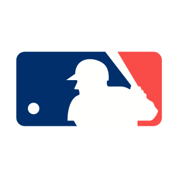

The Athletic
Top headlines

MLBMLB Power Rankings
All eyes are on these players heading into the second half. Our panel of writers ranks all 30 teams first to worst. Stats through Monday morning.
Make my power rankings list
Rank
Chg
Team
Record
Avg. Rank
More from your feed
Powered by